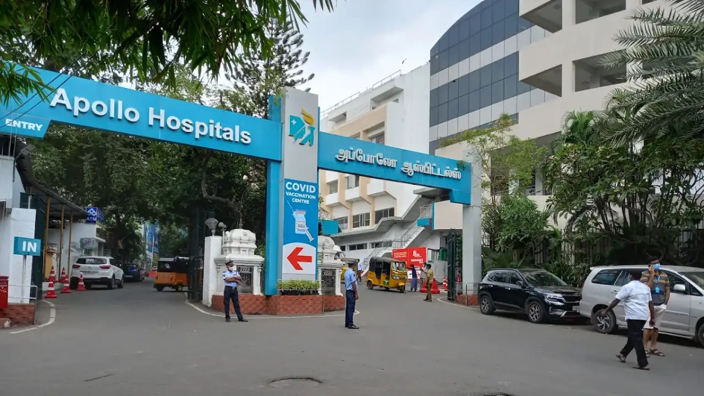

Which One Is the Best Hospital for Cardiac Surgery in India?
How international patients can compare leading heart hospitals for their medical needs, travel plan and budget.
When a patient or family starts searching for cardiac surgery in India, one of the first questions is usually: “Which is the best hospital for cardiac surgery in India?”
The honest answer is that there is no single hospital that is best for every heart patient. The right hospital depends on the heart condition, medical history, surgery required, surgeon’s experience, ICU support, hospital infrastructure, recovery needs and budget.
India has become a trusted destination for international patients seeking heart treatment because it offers advanced cardiac care, experienced surgeons, modern hospitals, English-speaking medical teams and more affordable treatment than in many countries. At MedTreat India, our focus is helping international patients find the right treatment at the right price with transparent guidance.
What Is Cardiac Surgery?
Cardiac surgery refers to surgical procedures performed on the heart or major blood vessels connected to it. Surgery may be required when medicines, lifestyle changes or non-surgical procedures are not enough to manage the condition.
Common cardiac surgeries and heart procedures in India include:
- Coronary artery bypass graft surgery (CABG or bypass surgery)
- Heart valve repair or replacement
- Minimally invasive cardiac surgery
- Aortic, congenital and pediatric heart surgery
- Heart transplant evaluation and advanced heart-failure management
- Angioplasty and stent placement, where suitable
- Pacemaker and electrophysiology procedures
The treatment plan should always be decided after review of reports such as ECG, ECHO, angiography, CT scans, blood tests and the patient’s overall health.
Which Is the Best Hospital for Cardiac Surgery in India?
For international patients, the best hospital is not always the most famous hospital. It is the hospital that matches the patient’s exact medical need. Some leading hospitals and heart institutes often considered for cardiac surgery in India include:
Fortis Escorts Heart Institute, New Delhi
Fortis Escorts Heart Institute is a well-known dedicated heart hospital. It is often considered by patients seeking adult cardiac surgery, bypass surgery, valve surgery, minimally invasive or robotic cardiac surgery and other complex heart procedures.
Best suited for: Patients looking for a dedicated heart institute in Delhi with advanced cardiac infrastructure and experienced cardiac teams.
Apollo Hospitals / Apollo Heart Institutes

Apollo has a large healthcare network in India and is known for comprehensive cardiac care across multiple cities. Its heart programs cover bypass surgery, angioplasty, valve treatment, heart-failure care, pediatric cardiac care and other advanced services.
Best suited for: Patients who prefer a large hospital network, multi-specialty support and established international patient services.
Medanta – The Medicity, Gurugram

Medanta Heart Institute is known for advanced cardiac care, complex cardiac surgery, minimally invasive procedures, heart-transplant support and multidisciplinary treatment planning. Its Gurugram location is close to Delhi International Airport, making it convenient for many international patients.
Best suited for: Patients looking for advanced cardiac surgery in Delhi-NCR with access to multi-specialty medical care.
Narayana Institute of Cardiac Sciences, Bengaluru
Narayana Health has strong recognition in cardiac sciences, including adult cardiac surgery, pediatric cardiac surgery, congenital heart conditions and complex heart procedures. Bengaluru is also a major medical destination with good international connectivity.
Best suited for: Patients looking for high-volume cardiac care, pediatric heart surgery and cost-conscious treatment planning.
Asian Heart Institute, Mumbai
Asian Heart Institute is a dedicated cardiac-care hospital known for cardiology, cardiac surgery, preventive cardiology and minimally invasive heart treatments. Mumbai is also easily accessible for many international patients.
Best suited for: Patients looking for a focused cardiac hospital in Mumbai with international care standards.
How Should International Patients Choose a Cardiac Surgery Hospital?
1. Surgeon’s experience
Check whether the surgeon regularly handles cases similar to yours, such as bypass surgery, valve replacement, pediatric heart surgery or complex revision surgery.
2. ICU and emergency support
Heart-surgery recovery depends heavily on post-operative ICU care. Look for advanced ICU support, trained cardiac nurses, infection-control protocols and emergency-response systems.
3. Type of surgery needed
Some patients need open-heart surgery, while others may be suitable for minimally invasive or catheter-based procedures. The best hospital is the one that recommends the right option, not simply the most expensive one.
4. Transparent cost estimate
Ask for a written estimate covering doctor fees, hospital and ICU stay, medicines, surgery, implants or valves, investigations and possible extra costs.
5. International patient support
Useful services can include medical opinions, visa letters, airport pickup, accommodation and interpreter support, local coordination and post-treatment follow-up.
6. Accreditation and safety standards
Accreditations such as NABH or JCI can help identify hospitals following structured quality and patient-safety standards. Accreditation alone does not guarantee the best result, but it is an important comparison factor.
Why Do International Patients Choose India for Cardiac Surgery?
Advanced care at a more affordable cost
India can offer cardiac treatment at a lower cost than many Western and Gulf countries. The goal should not be the cheapest option, but the best value: experienced doctors, safe surgery, strong ICU care, transparent pricing and proper recovery support.
Experienced cardiac surgeons
India has many cardiac surgeons with years of experience handling bypass, valve, congenital and other complex heart procedures. High patient volumes have also given many cardiac teams substantial practical experience.
Modern hospitals and technology
Leading hospitals use advanced diagnostics, cath labs, modular operating theatres, cardiac ICUs, robotic systems, minimally invasive techniques, advanced imaging and heart-lung machines. Multi-specialty teams can support patients with diabetes, kidney, lung or other health conditions.
Faster access and easier communication
India often provides faster access to specialists, investigations and surgery dates when complete reports are available. English is widely used in private hospitals, making communication easier for many international patients.
Travel and follow-up support
Medical visas, attendant travel, airport transfers, accommodation, interpreters and treatment coordinators can make the journey more manageable. After returning home, many patients can continue follow-up online for medicines, wound care, diet advice and report review.
India vs Other Countries for Cardiac Surgery
USA or UK: Both have advanced healthcare systems, but private treatment costs can be high, and waiting times vary by system and insurance coverage. India is often considered by patients seeking faster access and more affordable private care.
UAE: The UAE has excellent hospitals and infrastructure, but cardiac treatment costs may be higher. India can offer lower costs and convenient Gulf-region connectivity.
Thailand: Thailand is popular for medical tourism and hospitality. For complex cardiac surgery, some patients consider India because of its specialist heart institutes, surgical experience and cost advantage.
Turkey: Turkey is another strong medical-tourism destination. India remains competitive because of experienced cardiac surgeons, English-speaking teams, large hospital networks and affordable treatment planning.
The best country depends on diagnosis, urgency, budget, travel comfort and the treating doctor’s recommendation.
What Documents Are Needed for a Cardiac Surgery Opinion?
To receive a more accurate treatment plan and cost estimate, international patients should share:
- Passport copy and recent medical summary
- ECG and ECHO reports
- Coronary angiography report and CD or video, if available
- CT angiography and blood-test reports, if available
- Current medicines and details of other health conditions
- A recommendation from the doctor in the home country, if available
The more complete the reports, the more useful the hospital opinion and preliminary cost estimate can be.
How MedTreat India Helps International Cardiac Patients
Patients can receive different opinions, prices and hospital recommendations. MedTreat India helps by reviewing reports, shortlisting hospitals and doctors, guiding on expected costs, coordinating appointments and admissions, and supporting travel, accommodation and follow-up planning.
Our goal is not just to suggest a famous hospital. It is to help patients compare options that fit their condition, budget and recovery needs.
Frequently Asked Questions
Which is the best hospital for cardiac surgery in India?
There is no single best hospital for every patient. Leading options include Fortis Escorts Heart Institute, Apollo Hospitals, Medanta, Narayana Health and Asian Heart Institute. The right choice depends on diagnosis, surgeon requirement, infrastructure, location and budget.
Is cardiac surgery in India safe for international patients?
Many leading Indian hospitals follow structured safety, ICU, infection-control and quality protocols. Individual safety still depends on the patient’s condition, hospital and surgeon selection, and post-operative care.
Why is cardiac surgery more affordable in India?
Hospital operating costs, medical service costs and overall healthcare expenses are generally lower than in many Western and Gulf countries, allowing advanced treatment at a more affordable price.
How long should an international patient stay in India after heart surgery?
The stay depends on the procedure and recovery. Many patients may need a few weeks for surgery, hospital recovery, follow-up and fitness-to-fly approval. The treating doctor should advise the final duration.
Can MedTreat India help me choose the right hospital?
Yes. MedTreat India helps patients compare hospitals, doctors, expected treatment plans and cost estimates so they can make a more informed decision.
Conclusion
India is a trusted destination for cardiac surgery because it offers experienced cardiac surgeons, advanced hospitals, competitive costs, shorter waiting times and international-patient support. But the best hospital is not the same for everyone. The decision should be based on the patient’s heart condition, reports, surgery type, infrastructure, surgeon experience and total treatment cost.
Need help choosing a cardiac surgery hospital in India?
Share your medical reports with MedTreat India for suitable hospital options, doctor opinions and treatment-cost guidance.